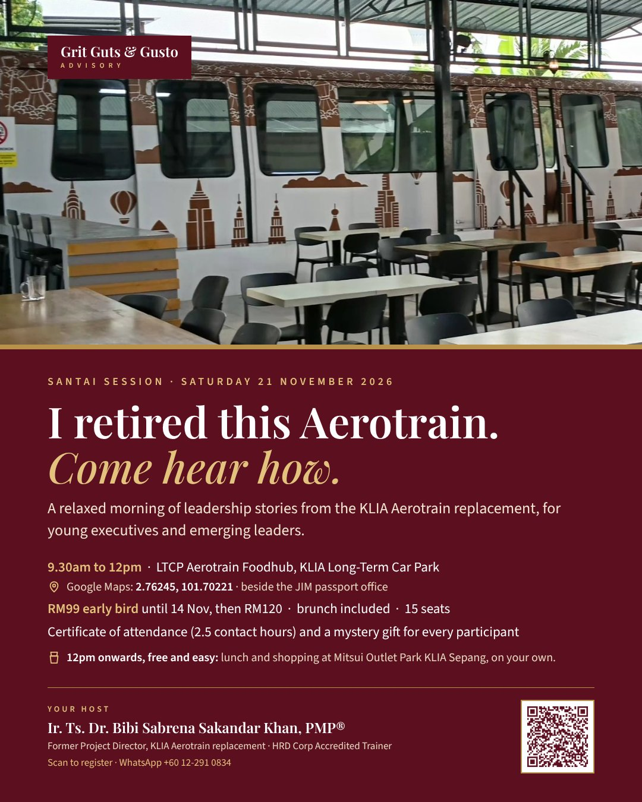

I retired this Aerotrain. Come hear how.
5 November 2026 · Ir. Ts. Dr. Bibi Sabrena Sakandar Khan
It was a mess. It was a do-or-die mission.
For five years I led the KLIA Aerotrain replacement. Old trains out, new system in, while the airport kept running and passengers kept moving. Some days went to plan. Many didn't.
The old cars didn't disappear. They now sit at a café in the KLIA long-term car park, LTCP Aerotrain Foodhub. That's where I'm hosting my first santai session.
A santai morning by the carriages
On Saturday 21 November 2026, I'm going back there with a small group of young executives and emerging leaders. One long table beside the carriages, nasi lemak and teh tarik, and the honest version of what it took to deliver a project like that.
We'll talk about three things:
- Grit: pushing through the setbacks, once you've weighed the risks.
- Guts: the hard calls, and how to make them under pressure. Bring a real dilemma from your own work and we'll work through it together.
- Gusto: keeping a tired team going, and why every milestone deserves a celebration.
If you're a young engineer, a new supervisor, or someone who has just been handed your first team or first project, this morning is for you.
The details
- When: Saturday 21 November 2026, 9.30am to 12pm
- Where: LTCP Aerotrain Foodhub, beside the JIM passport office, KLIA Long-Term Car Park (Google Maps)
- Fee: RM99 early bird, paid by 14 November. RM120 after that.
- Included: brunch, a certificate of attendance (2.5 contact hours) and a mystery gift
- Seats: 15 only. Your seat is confirmed once payment is received.
- After: 12pm onwards is free and easy. Lunch and shopping at Mitsui Outlet Park KLIA Sepang, on your own.
PMP holders and engineers can use the certificate to self-report the hours for PMI PDUs or their CPD records.
Did you ever ride the old Aerotrain? Come and see it again, and hear the story behind it.
Adapted from posts first published on Threads (@gritgutsgusto) and LinkedIn, November 2026.